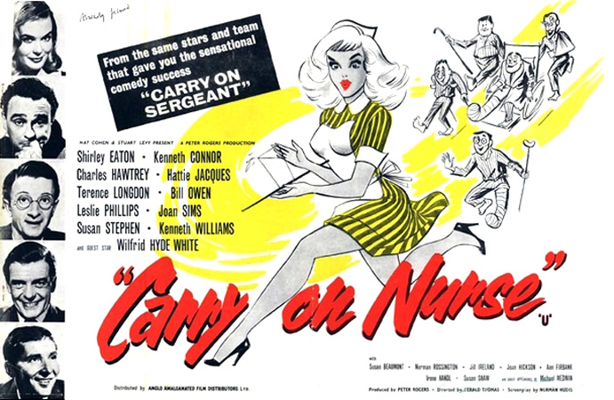

Peter Rogers
Bernard Bresslaw (uncredited): his feet were used as stand-ins for Terence Longdon's, when the latter's character was supposedly standing in a bath.
The journalist Ted York (Terence Longdon) is rushed to Haven Hospital with appendicitis. The ambulance gets there at top speed, but only because the driver wants to know the result of a horse race. Ted is given a bed and is instantly smitten with Nurse Denton (Shirley Eaton). The other nurses are incessantly having to respond to the calls of the Colonel (Wilfrid Hyde-White), who has a private room. He is an inveterate gambler and is having his bets placed by Mick (Harry Locke), the orderly.
That evening, the boxer Bernie Bishop (Kenneth Connor) is admitted after hurting his hand at the end of a bout. The next day, the Sister (Joan Hickson) galvanises the nurses, orderly and patients for the inspection by Matron (Hattie Jacques). As usual, she is let down by Nurse Dawson (Joan Sims), a clumsy probationer. Matron checks on the progress of the patients, and speaks to Mr Hinton (Charles Hawtrey), who is forever listening to the radio with his headphones. Mick and the Colonel bet on how long the Matron will take on her rounds.
Ted is visited by his editor and agrees to write a series of articles on his hospital experiences. He realises that Nurse Denton is in love with a doctor, but that her interest is not returned. Bernie is told that he will not be able to box for several months at least. Nurse Dawson is sent to ring the bell to signal the end of visiting hours, but she calls for the fire brigade by mistake.
The bookish intellectual Oliver Reckitt (Kenneth Williams) is visited by Jill (Jill Ireland), the sister of his friend Harry. They clearly like each other, but are too shy to admit it. Bernie urges Oliver to admit how he really feels about her. Bernie's manager Ginger (Michael Medwin) comes to visit him and tells him that he must try to be more of a showman and not simply go for broke with every match. Nurse Dawson comes in early to sterilise some rubber catheters, but is interrupted by the demanding Colonel. The catheters are put in a kidney dish to boil on the stove. Oliver is furious when the ward has to be cleared and tidied up for Matron's rounds as it upsets his schedule for no obvious purpose. When she arrives everyone begins to smell the forgotten catheters, which by now are burning on the stove. When Matron stops to speak to Oliver, he complains about the disruptive effects that her visits have on the patients. Matron is furious and has the Sister make all the beds again.
Jack Bell (Leslie Phillips) arrives to have a bunion removed and is placed on the ward. Jill comes to see Oliver and they admit that they care for each other. She gives him a bar of nougat as a gift, but later that evening it makes him sick. Mr Able complains that he can not sleep as he has been missing his wife. He is put on medication, but it makes him wildly excited and he runs amok in the hospital. Eventually Bernie subdues him with a left hook to the jaw.
Bell's operation is delayed, which upsets him greatly as he is planning a romantic weekend. He offers the men in the ward the champagne he was going to drink with his girlfriend. They all get drunk and decide to remove the bunion themselves. The night nurse is tied up and Hinton pretends to be her while the others go to the operating theatre. Jack starts to panic as Oliver prepares to operate, but soon they are all giggling as the laughing gas has been left on. The nurse arrives before any real damage is done.
The colonel plays a trick on Nurse Dawson and pins a piece of paper with a large red 'L' on her back. Ted learns that Nurse Denton is applying for a job in America and tries to dissuade her. Jack catches a cold and is told that his operation will have to be postponed yet again. Oliver is discharged and leaves with Jill. Bernie is met by his young son and they leave together. Ted is also discharged and makes a date with Nurse Denton. Nurse Dawson and Nurse Axwell decide to get even with the Colonel and replace a rectal thermometer with a daffodil. Luckily for them, upon her inspection, Matron manages to see the funny side.
Filming dates: 3 November – 12 December 1958.
Interiors: Pinewood Studios, Buckinghamshire.
At-A-Glance Film Review - "a good comedy, but for my money it doesn't live up to its astonishing success, which was great enough that it inspired three further medical Carry Ons. The film lacks the cohesion of its predecessor, perhaps because there is no central problem - can the platoon of misfits pull through? - upon which to wind the comic tension. It works not because the film as a whole works but because several well-done scenes overshadow the dry spells. Perhaps the film's popularity was due to its humour, which was rather risque for 1959. The daffodil bit, for instance, might be the most famous joke in the series. But it's funny not because it's naughty but because of the finesse in its execution: when Hattie Jacques delivers the key line, we laugh; but it's when this humourless character cracks a glimmer of a smile that we feel good about it."
Time Out - "slapdash in conception and execution, the films nominally satirised British customs and institutions or other movie genres, but soon became bogged down in a preoccupation with tits and bums, celebrated in a non-stop flow of innuendo and excruciating puns."